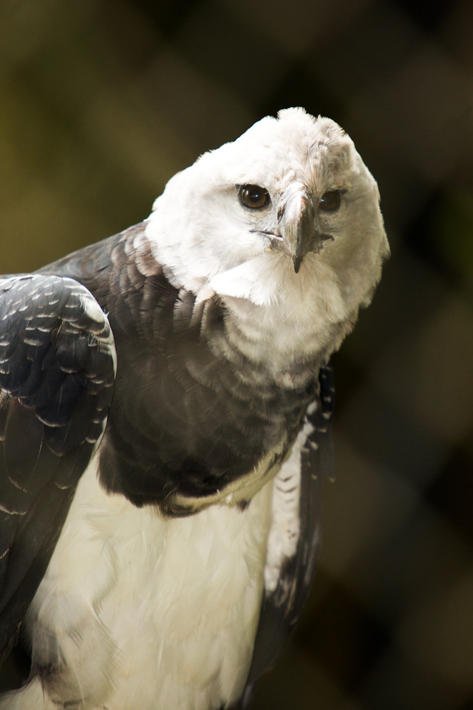

Panama
Simbolos Patrios
Bandera
Ave Nacional: Aguila Harpia
Arbol Nacional: Stercus
Flor Nacional: Flor del Espiritu Santo
Historia:
Colonizacion
El istmo de Panamá fue visitado por primera vez por los conquistadores españoles durante la expedición del escribano de Triana, Rodrigo de Bastidas, en 1501. Bastidas navegó la costa caribeña de la actual provincia de Colón y las islas del archipiélago de la Comarca de San Blas. Debido a la mala condición de sus barcos, Bastidas suspendió su expedición y regresó a España.
El 10 de octubre de 1502, en su cuarto viaje, Cristóbal Colón llegó a la costa atlántica del istmo, en las actuales provincias de Bocas del Toro y Veraguas. El 2 de noviembre, llegó a una preciosa bahía en la actual provincia de Colón, a la que bautizó como el nombre de Portobelo o Puerto Bello. Entró en conflicto con el Cacique Quibián, Señor de Veragua, cuando desde el 6 de enero de 1503 entró al río al que llamó Belén, y se asentó en su márgen occidental. Los indígenas intentaron desviarle a las extracciones de oro de caciques rivales, y posteriormente polemizaron en cruentas batallas hasta la expulsión hispana.
Independencia
Motivada por los aires de libertad de sus países vecinos, Panamá se independiza de España en el mes de noviembre de 1821. El asunto no era de sorprender ya que su comunicación con España se había deteriorado. Sin embargo, el proceso de independencia fue pacífico tanto así, que el mismo Simón Bolívar la conmemoró. Luego de la independencia de España, Panamá se unió voluntariamente a la Gran Colombia, el sueño de Bolívar. Esa nueva nación estaba conformada por Colombia, Venezuela y Ecuador.
Al principio, esa unión histórica benefició mucho al país, dando paso a una nueva visión de líderes latinoamericanos que impulsaban un gran desarrollo regional. En esta época se le otorgó a los Estados Unidos la autorización para construir el primer ferrocarril transístmico.
Separacion de la Gran Colombia
En 1830 se produce la Primera Separación de Panamá de Colombia. La Gran Colombia atravesaba por un caos político debido a que Venezuela y Ecuador tomaron la decisión de separase de la confederación, Sucre había sido asesinado y Bolívar estaba fuera del gobierno. El general José Domingo Espinar, Comandante Militar del Istmo, declara la separación de Panamá el 26 de septiembre de 1830, al no estar de acuerdo con la inestabilidad del gobierno de Joaquín Mosquera, sucesor de Bolívar. Espinar le ofrece a Bolívar el gobierno del Istmo, para que luchara por la adhesión de los demás países de la confederación, sin embargo Bolívar se encontraba enfermo y declina el ofrecimiento, pidiéndole a Espinar que reintegrara el Istmo de nuevo a la Gran Colombia. Panamá fue reintegrada a la confederación el 11 de diciembre de 1830, demostrando la posibilidad de una nación independiente de la Gran Colombia.
Luego de 17 intentos de separación y 4 separaciones declaradas con un posterior reintegro de la unión con Colombia, el fracaso de la construcción del canal por parte de los franceses, la Guerra de los mil días trasladada a territorio panameño, el fusilamiento del caudillo liberal Victoriano Lorenzo, el rechazo del senado colombiano al Tratado Herrán-Hay para la construcción del canal interoceánico por parte de los Estados Unidos sirven de detonante para un nuevo movimiento separatista liderado por José Agustín Arango, Dr. Manuel Amador Guerrero, Federico Boyd, Tomás Arias y Manuel Espinosa.
Division Territorial
La división político-administrativa de la República de Panamá comprende 12 provincias , 81 distritos (o municipios), 5 comarcas indígenas (3 de ellas a nivel provincial) y 679 corregimientos de los cuales dos son comarcales.

Provincias
- Bocas del Toro
- Chiriqui
- Veraguas
- Ngabe-bluge
- Herrera
- Los Santos
- Cocle
- Colon
- Panama Oeste
- Panama
- Guna Yala
- Darien